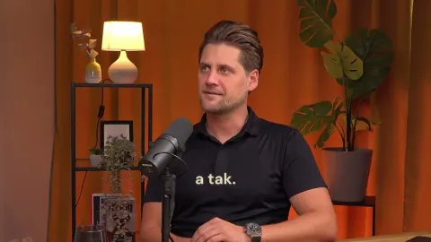
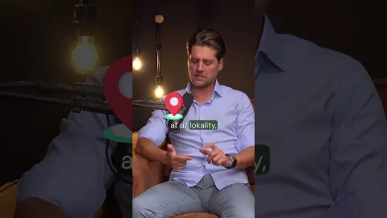

Šest otázek, které si každý položí
Neprocházíme sekce, procházíme vaše otázky. V pořadí, v jakém chodí. Zabere to pět minut.

To je celé. Zbytek stránky je pro toho, kdo chce vědět proč a jak přesně.
Co si vlastně kupuju?
Osm lidí, jedna nemovitost, váš podíl. Nekupujete si týden ani členství v klubu. Kupujete reálný podíl 12,5 % ve společnosti, která drží jednu konkrétní nemovitost. A nic jiného.
Čím je podíl krytý
- Firma vlastní nemovitost i pozemekKupujete podíl ve společnosti, která je jejím jediným vlastníkem. Hodnota podílu jde s hodnotou domu.
- Jste společník zapsaný v rejstříkuNe člen klubu. Podíl se dá prodat, darovat i zdědit.
- Ve výstavbě i při rekonstrukci platíme až po kontroleDeveloperovi ani řemeslníkům neplatíme dřív, než zkontrolujeme, co je opravdu hotové.
Na co jdou vaše peníze
- Podíl na ceně nemovitosti
- Daň z převodu a právní struktura
- Prověrka nemovitostistrukturální a právní (due diligence)
- Renovace a vybavení
- Právní a daňové poradenství
- Přímé náklady koupě
Všechno je v ceně podílu.

Jednu nemovitost vybíráme kvůli místu, ne kvůli výnosu. Před koupí ji prověříme strukturálně i právně.
A kdy tam teda můžu být?
44 nocí v roce a jak se dělí. Rok patří osmi spoluvlastníkům. Na jeden podíl připadá 44 nocí, na dva 88, na tři 132. Není to 365 dělených osmi. Číslo 44 je obchodní pravidlo, které počítá i s předáváním mezi vlastníky.
Podrobněji
Rozvrh se domlouvá dopředu a sezónní termíny rotují, aby na každého vyšlo hlavní období. Konkrétní pravidla projdeme na schůzce. Zatím je nastavujeme u každé nemovitosti zvlášť.
Co když tam nedorazím?
Nevyužité dny se pronajmou a výnos je váš. Nepronajímá se „zbytek roku“. Pronajímá se to, co ze svých 44 nocí nevyužijete. Kdyby si všech osm vybralo všechno, nepronajímá se nic. Výnos si tedy řídíte sami.
Odhad výnosu u každé nemovitosti je vždy už po odečtení všech poplatků i měsíčního poplatku. Konkrétní procento neslibujeme. Výnos závisí na obsazenosti, sezóně, kurzu měny a na tom, kolik dní si pro sebe vezmou ostatní spoluvlastníci. Modelovaná ani historická výkonnost není zárukou budoucí. Nejde o investiční doporučení.
Pronájem i dům řešíme my
- Povolení ke krátkodobému pronájmu
- Registraci hostů
- Nepřijetí hosta
- Recenze
- Platby hostů
- Úklid
- Opravy a údržbu
- Komunikaci s úřady
Není to nějaký timeshare?
Rozdíl, na kterém všechno stojí. U timeshare kupujete právo užívání na týdny, tady reálný podíl na majetku i výnosu.
USAŠpanělsko
Není to nový nápad. V Americe i ve Španělsku se takhle druhé domovy kupují roky. Přinesli jsme to sem, do korun a do českého práva.
Popis timeshare vychází z obvyklé podoby produktu, konkrétní smlouvy se liší.
Za stejné peníze co byt v Praze?
Rozvaha, ne slib. Nejde o to, že by na pražský byt nezbylo. Jde o to, co za stejné peníze dostanete. A o to, že jeden byt drží celý rok na jednom místě.
- jedno místo
- 365 dní v roce vaše
- nájemník, nebo prázdné
- Omán · Thajsko · Itálie · Bali · Španělsko · Česko
- 352 nocí ročně v 6 zemích
- zbyde ≈ 1 870 000 Kč
Celé srovnání s pražským bytem →
Podrobněji
Osm nejlevnějších volných podílů k 15. 9. 2026. Cena bytu: medián nabídkových cen 160 543 Kč/m² pro 3+kk, brivo.cz, květen 2026. Srovnáváme počet míst a dní, nikoli výnosnost. Nejde o investiční doporučení.
Co se stane, když se ozvu?
Sedm dní držíme podíl i cenu.
Až na rezervaci dojde, podíl i cenu vám držíme 7 dní
Bez závazku a bez platby. Během té doby si v klidu projdeme nemovitost, smlouvy i rozvrh roku. Cena se vám mezitím nezvýší, ani když projekt přejde do další fáze.
Proč lidé kupují podíl místo celé nemovitosti
- DostupnostSpoluvlastníkem prémiové nemovitosti se dá být už od 966 000 Kč.
- Vlastní pobyty44 nocí ročně na jednu nemovitost, nebo balíček ve víc lokalitách.
- Pronájem nevyužitých nocíCo ze svých nocí nevyužijete, se pronajme.
- Správa bez starostíProvoz i pronájem vedeme my.
- ProdejPodíl prodáte kdykoli a cenu si určíte sami.
- Víc místPodíly můžete mít v několika zemích.
- Směna pobytůPobyty jde měnit s ostatními spoluvlastníky napříč nemovitostmi.
- A jedna nevýhodaDům sdílíte s dalšími spoluvlastníky.Správu a koordinaci domu proto zajišťujeme my, takže se s ostatními o správě domu napřímo domlouvat nemusíte.
Na co se ptají nejčastěji
Radši zavoláte? +420 604 827 601
Co vlastně kupuju
Nemovitost i pozemek vlastní jedna účelově založená společnost, ve které kupujete svůj podíl. Ta je v katastru zapsaná jako jediný vlastník, takže se přes svůj podíl stáváte poměrným vlastníkem nemovitosti.
V Indonésii a některých dalších zemích nesmí zahraniční společnost pozemek vlastnit ani dlouhodobě pronajímat. Proto tam vzniká dceřiná domácí společnost vlastněná českým s.r.o., na kterou už tato práva převést lze. Zajištění je stejné jako u přímého vlastnictví, jen s jednou společností navíc.
Jeden podíl je obvykle 1/8 nemovitosti a náleží k němu 44 nocí ročně. Koupit si můžete i víc. Dva podíly znamenají 88 nocí, tři 132. Horní hranicí je počet podílů, které jsou zrovna v prodeji. Jeden z osmi držíme my.
Nemovitost je kompletně zařízená a vybavená vším, co je denně potřeba: nádobí, ložní prádlo, ručníky. Interiér řešíme s designéry a prověřenými dodavateli, aby držel jednotný standard. Vlastní úpravy jsou po domluvě možné, většinou ale nejsou potřeba.
Peníze
Měsíční poplatek 70 € za podíl 1/8. Hradí se z pronájmu vašich nevyužitých nocí, pokud nějaký je, jinak ho platíte vy. Na nákladech domu se podílíte podle velikosti podílu; jejich výši předem určit nejde.
Jednou, při koupi
0 Kč navíc
- Daň z převodu a právní struktura
- Prověrka nemovitosti
- Renovace a vybavení
- Právní a daňové poradenství
Všechno je už v ceně podílu.
Každý měsíc, pevně
70 € za podíl 1/8
- Pronájem a hosté
- Úklid, registrace, recenze
- Povolení, platby a úřady
Platí se z pronájmu. Když pronájem nestačí, doplácíte vy.
Provoz domu, podle podílu
⅛ skutečných nákladů
- Energie a voda
- Svoz odpadu
- Pojištění domu
- Daň z nemovitosti
- Internet, bazén, zahrada
Výše se liší rok od roku, předem ji určit nejde.
Tabulka níž ukazuje, kdo co platí, když se pronajímá a když ne.
Proto je odhad výnosu u každé nemovitosti vždy už po odečtení všech poplatků i měsíčního poplatku. Počítá i s náklady na provoz domu. Jejich přesnou výši předem neznáme, proto uvádíme cíl, ne slib.
| Když se pronajímá | Když se nepronajímá | |
|---|---|---|
| Měsíční poplatek70 € za podíl 1/8 | Hradí se z pronájmu. | Platíte vy. |
| Náklady domupodle podílu | Hradí se z pronájmu. | Platíte vy, podle podílu. |
| Odhad výnosu na webu | Už po odečtení obojího. | Výnos není, podíl i noci vám zůstávají. |
| Kdo to zařizuje | Fragmento: povolení ke krátkodobému pronájmu, registrace hostů, recenze, platby hostů, úklid, opravy a údržba, komunikace s úřady. | |
Když se pronajímá
- Měsíční poplatek · 70 € za podíl 1/8
- Hradí se z pronájmu.
- Náklady domu · podle podílu
- Hradí se z pronájmu.
- Odhad výnosu na webu
- Už po odečtení obojího.
Když se nepronajímá
- Měsíční poplatek · 70 € za podíl 1/8
- Platíte vy.
- Náklady domu · podle podílu
- Platíte vy, podle podílu.
- Odhad výnosu na webu
- Výnos není, podíl i noci vám zůstávají.
Kdo to zařizuje: Fragmento: povolení ke krátkodobému pronájmu, registrace hostů, recenze, platby hostů, úklid, opravy a údržba, komunikace s úřady.
Výnos z pronájmu není zaručený.
Vaše investice se skládá z podílu na ceně nemovitosti, vedlejších nákladů na pořízení (daň z převodu, právní poplatky, právní struktura), due diligence, renovace a vybavení, konzultačních nákladů na právní a daňovou strukturu a ostatních přímých nákladů spojených s akvizicí.
Strukturu připravujeme s daňovými a právními kancelářemi tak, aby minimalizovala daňová rizika v ČR i v zahraničí. Konkrétní dopady se liší podle země i podle vaší situace, doporučujeme je probrat na osobní konzultaci, ne se spolehnout na obecnou odpověď.
Ceny nemovitostí uvádíme v EUR, takže transakce probíhá v eurech nebo v místní měně. Koruny i dolary přijímáme formou směny v aktuálním kurzu. Záleží na lokalitě a na měně, v níž se akvizice hradí.
Nákup a prodej
Jako fyzická osoba ano, i ve společném jmění manželů. V obchodním rejstříku je pak ale zapsaný jen jeden z páru. Nákup na právnickou osobu je taky možný. Kupujete obchodní podíl, takže konkrétní nastavení projdeme individuálně.
Kdykoli a za cenu, kterou si určíte.
- SamiBez poplatku.
- Přes nás, za proviziDoporučíme tržní cenu, podíl nabídneme nejdřív ostatním společníkům a pak našim zájemcům.
- Když to spěcháPodíl umíme vykoupit i my.
Ostatní společníci mají předkupní právo, ne právo kupce schvalovat.
Užívání
Kompletní správu zajišťujeme my, včetně regionálního správce na místě: běžná údržba, opravy, úklid, pojištění, bezpečnost, údržba pozemku i bazénu a komunikace s úřady. Pronájem vede buď místní profesionální správce, nebo přímo náš tým. Řešíme i povolení ke krátkodobému pronájmu, registraci hostů, nepřijetí hosta, recenze a platby hostů.
A hlavně: jeden z osmi podílů držíme my. Jsme na jedné lodi. Když nemovitost nefunguje, přicházíme o to samé co vy.
Ano, je to jedna z hlavních výhod. Pobyty jde měnit s ostatními spoluvlastníky napříč nemovitostmi. Nabídnete třeba týden ve svém apartmánu u moře za týden na horách.
Kolik času stojí celý dům v zahraničí s krátkodobým pronájmem
Metodika odhadu z úvodní stránky. Čísla jsou odhad pro modelový případ, ne tvrzení o konkrétní nemovitosti. Kde jsme nic lepšího nenašli, píšeme to rovnou.
Měsíční časy jsou roční odhad dělený dvanácti, zaokrouhlený na celé hodiny (pod jednu hodinu na půlhodiny).
Souhrn
- Hodinové oblasti dohromady (komunikace, klíče a úklid, storna a problémy, recenze, registrace, platby a daně, opravy): spodní meze 30+20+10+5+5+15+20 = 105 h, horní meze 80+50+25+10+15+40+50 = 270 h ročně, tedy 9–23 h měsíčně.
- Při 8 h práce denně je to 13–34 pracovních dnů, k tomu 4–9 dnů na cestách. Povolení se k tomu jednorázově přidává.
- Nezávislá kontrola: AirROI (14. 4. 2026, s odkazem na Hometime a průzkumy hostitelů) uvádí 10–20 h měsíčně za jednu nemovitost při průměrné obsazenosti, tedy 120–240 h ročně. Náš součet 105–270 h leží ve stejném pásmu. Proto uvádíme rozpětí, ne jedno číslo.
- Úmyslně nepoužíváme horní odhady: Hometime (20. 2. 2026) „20–40 h týdně“ a Stay Coastal FL „20–30 h týdně“ jsou pro aktivní celoroční pronájem v USA a bez metodiky.
Kde je odhad slabý
- Počet pronajatých nocí je předpoklad (120–180). U 60 nocí by časy klesly zhruba na polovinu, u celoročního pronájmu by rostly.
- Storna a problémy hostů jsou odvozené z amerických a hotelových dat, pro evropské domy nemáme přímé číslo.
- Údržba a cesty: nenašli jsme žádné měření v hodinách, jen náklady v penězích. Jde čistě o metodiku.
- Když majitel uklízí nebo se o bazén stará sám, přidává se 60–160 h úklidu (25–40 × 2,5–4 h) a 13–26 h bazénu. To v odhadu záměrně není.
Modelový případ
| Předpoklad | Hodnota | Opora |
|---|---|---|
| Nemovitost | celý dům / vila se 3–4 ložnicemi, u moře, s bazénem nebo zahradou | typ nemovitostí v katalogu Fragmenta |
| Majitel | bydlí v Česku, dům spravuje sám přes Booking/Airbnb, na místě má uklízečku a řemeslníky na zavolání (sám neuklízí) | konzervativní varianta: kdyby uklízel sám, čas výrazně roste |
| Pronajaté noci | 120–180 nocí ročně (33–49 % roku) | AirROI, Split: průměrná obsazenost 46 % (data portal 2025, staženo 15. 9. 2026). Pro srovnání AirDNA MarketMinder, Grad Split: 64 %. Bereme spodní část, protože dům mimo město a mimo sezónu se obsazuje hůř. |
| Průměrná délka pobytu | 4,6 noci | DZS, TUR-2024-1-2 (28. 2. 2025): komerční smještaj 2024 = 20,2 mil. příjezdů, 93,7 mil. nocí, tedy 4,64 noci. Zahraniční hosté 4,9. |
| Počet střídání hostů | 25–40 ročně | 120 : 4,6 ≈ 26; 180 : 4,6 ≈ 39 |
Odhad po oblastech
| Oblast | Co to obnáší | Čas majitele | Zdroje a výpočet | Jistota |
|---|---|---|---|---|
| Komunikace s hosty a rezervace | Dotazy před rezervací, pokyny k příjezdu, zprávy během pobytu, kalendář a ceny na dvou portálech. Odpověď se čeká do několika hodin, i když jste zrovna na dovolené. | 30–80 h ročně 3–7 h měsíčně | Metodika: 25–40 pobytů × 0,75–1,5 h + kalendář a ceny ~0,5 h týdně v sezóně (26 týdnů). Horní mez pro kontrolu: GuestReady (1. 6. 2024) uvádí 2–3 h denně při aktivním pronájmu, bez zdroje, proto jen jako strop. | střední |
| Předávání klíčů a úklid mezi pobyty | 25–40 střídání. Domluvit uklízečku na každý odjezd, zajistit prádlo, předání klíčů nebo schránky, kontrola fotek, náhrada při výpadku uklízečky. Samotný úklid velkého domu trvá 2,5–4 h (u domu s bazénem až půl dne), ale ten dělá uklízečka. | 20–50 h ročně (jen koordinace) 2–4 h měsíčně | Hostfully (5. 8. 2026): běžný úklid 1–3 h, „large multi-bedroom with pool“ půl dne a víc. Uplisting (vyhledávání 15. 9. 2026, datum článku neuvedeno): 3–4 ložnice 2,5–4 h. Metodika: 25–40 × 0,5–1 h koordinace + 5–10 h ročně na shánění a zaučení lidí. | střední |
| Nepřijetí, storna a problémy hostů | Host nepřijede nebo zruší a termín je potřeba znovu nabídnout. Za pobytu nejde wifi, klimatizace, voda. Škody a spory. | 10–25 h ročně 1–2 h měsíčně | AirDNA přes Ainora (18. 4. 2026): Airbnb zhruba 14 % zrušených rezervací (13–17 % podle sezóny). Booking.com 39,6 %, D-Edge 2022, ovšem jde o hotely, proto nebereme. Metodika: ~4–6 storen × 1 h + 4–8 problémů za pobytu × 1–2 h. | nízká |
| Recenze | Hodnocení hosta a odpověď na jeho recenzi, obojí do 14 dnů po odjezdu. Reklamaci musí iznajmljivač v Chorvatsku písemně vyřídit do 15 dnů. | 5–10 h ročně 0,5–1 h měsíčně | Airbnb Help Center, čl. 13 (staženo 15. 9. 2026): „14 days after checkout“. TZ Krk, Upute za iznajmljivače (3. 3. 2025): odpověď na písemnou reklamaci do 15 dnů. Metodika: 25–40 × 10–15 min. | střední (lhůty vysoká, minuty odhad) |
| Registrace hostů | Chorvatsko: eVisitor do 24 h po příjezdu i odjezdu. Španělsko: SES.Hospedajes, údaje nejpozději do 24 h. Bali: hlášení zahraničních hostů do 24 h. Každý pobyt znamená sebrat doklady všech hostů a zapsat je. | 5–15 h ročně 0,5–1 h měsíčně | gov.hr, Prijava i odjava turista; TZ Krk (3. 3. 2025); Lodgify, SES Hospedajes guide 2026 (RD 933/2021 povinné od 2. 12. 2024); Bali Property Rules (9. 2. 2026, aktualizace 3/2026). Metodika: 25–40 × 10–20 min. | vysoká (povinnost), střední (čas) |
| Platby a daně | Kontrola výplat z portálů a provizí. Turistická taxa: v Chorvatsku paušál do 31. 7. nebo ve třech splátkách (31. 7., 31. 8., 30. 9.). Paušální daň z příjmu čtvrtletně, členský příspěvek turistické zóně. Španělsko: Modelo 210 pro nerezidenty, za rok 2026 jednou ročně (1.–20. 4. 2027). Bali: daň z ubytování (PHR) až 10 % a daň z příjmu. Většinou s místním účetním. | 15–40 h ročně 1–3 h měsíčně | TZ Krk (3. 3. 2025) a Supetar, Priručnik za iznajmljivače 2025 (taxa); Porezna uprava / Minimax (paušál čtvrtletně); Iberian Tax a Pellicer Heredia (2026) (Modelo 210); Bali Property Rules (2026) (PHR, PPh). Metodika: ~1–2 h měsíčně na kontrolu plateb + 3–15 h ročně na daně a účetní. | střední |
| Povolení ke krátkodobému pronájmu | Jednorázově, před prvním hostem. Chorvatsko: rozhodnutí župního úřadu o kategorizaci; u bytu v domě navíc písemný souhlas 2/3 spoluvlastníků. Španělsko: licence regionu (od dnů po několik měsíců), od 1. 7. 2025 navíc národní registrační číslo, bez něj portál inzerát nezveřejní. U bytu v domě od 3. 4. 2025 souhlas 3/5 vlastníků. Bali: cizinec potřebuje firmu PT PMA, NIB, PBG, SLF a licenci vily, celkem 3–6 měsíců (jiné zdroje 6–12). | týdny až měsíce vyřizování, na Bali 3–6 měsíců. Hodiny majitele nevyčíslujeme. | Hola Huésped (28. 4. 2025); MIVAU (2. 6. 2025); idealista (27. 12. 2024); LO 1/2025 podle MIVAU (1. 4. 2025); Supetar Priručnik 2025 a Financije.hr (souhlas 2/3); Bali Property Rules, compliance guide (9. 2. 2026) a villa licensing guide 2026. | vysoká (povinnosti), nízká (délka, liší se podle místa) |
| Opravy a údržba | Bazén 1–2 h týdně v sezóně (sám, nebo servis, kterého je třeba hlídat), zahrada, řemeslníci, porucha za pobytu hosta, škody po bouřce, výměna vybavení. Na dálku jde hlavně o shánění, domlouvání a kontrolu. | 20–50 h ročně (koordinace na dálku) 2–4 h měsíčně | balancemypool.com (bez data): „Proper pool maintenance takes about 1-2 hours per week“. RapidEye (20. 7. 2026) podle Forbes (2024): údržba ~1 % hodnoty ročně, 5–8 % hrubého nájmu (peníze, ne čas). Metodika: servis bazénu a zahrady ~0,5 h týdně na domluvu v sezóně (13 h) + 4–8 neplánovaných oprav × 1,5–4 h + 2–5 h na přípravu sezóny. | nízká |
| Cesty na místo | Otevření a zavření sezóny, oprava nebo převzetí, které na dálku nejde, úřad. Nejde o dovolenou. | 4–9 dnů ročně (2–3 cesty × 2–3 dny) | flightconnections.com (9/2026): Praha–Split 1 h 35 min, 6 letů týdně. Omio / zaletsi.cz (bez data): Praha–Denpasar 16–23 h s přestupem. Počet a délka cest jsou náš odhad. | nízká |
Zdroje (staženo 15. 9. 2026)
- DZS, TUR-2024-1-2 Dolasci i noćenja turista u komercijalnom smještaju u 2024. (28. 2. 2025)
- AirROI, Split Airbnb Data 2025
- AirDNA MarketMinder, Grad Split
- AirROI, Airbnb Management vs Self-Manage (14. 4. 2026)
- Hometime, Managing an Airbnb in 2026 (20. 2. 2026)
- GuestReady, Airbnb time spent (1. 6. 2024)
- Hostfully, Vacation Rental Turnover Cleaning (5. 8. 2026)
- Uplisting, Airbnb Turnover Cleaning
- Ainora, Vacation Rental Cancellation Statistics 2026 (18. 4. 2026)
- Airbnb Help Center, Reviews
- gov.hr, Prijava i odjava turista
- TZ Krk, Upute za iznajmljivače 2025 (3. 3. 2025)
- Grad Supetar, Priručnik za iznajmljivače 2025
- Porezna uprava, Iznajmljivač turistima
- Minimax, Porezne obveze iznajmljivača
- Financije.hr, suglasnost suvlasnika
- Lodgify, SES Hospedajes 2026
- MIVAU, registro único od 1. 7. (2. 6. 2025)
- idealista, registro de alquileres de corta duración (27. 12. 2024)
- MIVAU, comunidades de vecinos y pisos turísticos (1. 4. 2025)
- Hola Huésped, Permisos y licencias 2026 (28. 4. 2025)
- Iberian Tax, Modelo 210 Explained 2026
- Pellicer Heredia, Non-resident tax Spain 210 form
- Bali Property Rules, Short-Term Rental Compliance for Foreigners (9. 2. 2026)
- Bali Property Rules, Villa Licensing 2026
- balancemypool.com, Weekly Maintenance
- RapidEye, Vacation Rental Maintenance Cost Statistics (20. 7. 2026)
- FlightConnections, Prague–Split
- Omio, Praha–Denpasar
Nezávazná poptávka
Ozveme se do jednoho pracovního dne. Bez závazku, bez tlaku.
Ozve se vám David, Lenka nebo Michal
Každý má na starosti své lokality.
Podíl držíme 7 dní